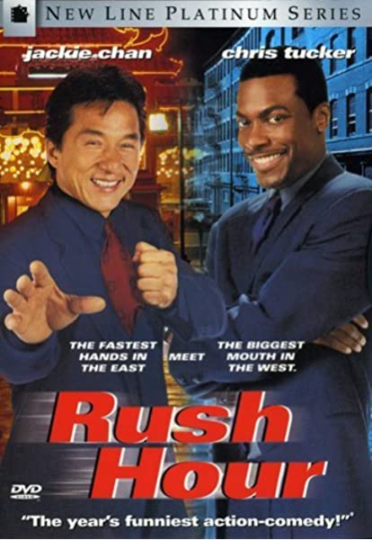

Rush Hour was released on September 18, 1998, grossing $245,300,000 worldwide. Martin Lawrence was originally considered for the role of James Carter. Chris Tucker was finally chosen for the part. Director Brett Ratner, a big fan of Jackie Chan's Hong Kong movies, felt that American audiences would not be familiar with the jokes in Jackie's other movies, and deliberately re-used some of his gags. For example, the scene where Inspector Lee accidentally grabs Detective Johnson's (Elizabeth Peña) breasts is a reference to Jackie Chan's film Mr. Nice Guy (1997). Rush Hour began as a spec script written in 1995 by screenwriter/novelist Ross LaManna. The screenplay was sold by LaManna's William Morris agent Alan Gasmer to Hollywood Pictures, a division of the Walt Disney Company, with Arthur Sarkissian attached as producer. After attaching director Ratner and developing the project for more than a year with producers including Sarkissian and Roger Birnbaum, Disney Studios Chief Joe Roth put the project into turnaround, citing concerns about the $34-million budget, and Chan's appeal to American audiences at the time. Several studios were interested in acquiring the project. New Line Cinema was confident in Ratner's talents, having done Money Talks with him, so they made a hard commitment to a budget and start date for Rush Hour.